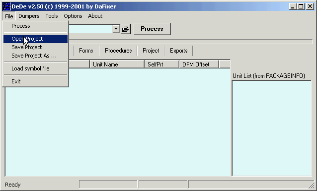

How to process a exe.
How to save a project.
How to load a saved project.
How to load a symbol file.
How do i build a symbol file.
How do i dump a DCU.
How do i edit the PE Header.
How do i dump a active process.
How do i build a DOI file.
How do i convert a RVA.
How do i dump the disassembled project source.
How to i get the assembler code from a code.
How do i export symbol files for IDA and Wdasm.
How to process a exe.
Click the Filename Edit box and select the to be disassembled exe.

After loading the exe click the Process button or click the Process menu item.
If the exe is a unpacked Delphi or Builder app the exe will be disassembled.
How to save a project.
After disassembling the exe click the File|Save Project menu item and choose the destination folder.
How to load a saved project.
Click the File|Open Project menu item to open a previously saved Project.

How to load a symbol file.
Load a symbol file by clicking the File|Load symbol file menu item.

Or you can click the Options|Symbols menu item to open the Symbols Management window.
How do i build a symbol file.
The generic VCL symbol file is included with the Dede's full distribution but you can
build a DSF symbol file from any DCU by clicking Dumpers|DSF builder.
You can also build a DSF symbol file from a BPL by selecting the BPL tab.
How do i dump a DCU.
Dump a DCU by clicking Dumpers|DCU Builder.
How do i edit the PE Header.
You can edit any PE Header (if you know what your doing) by clicking Tools|Pe Editor.
And do whatever you want to do in this editor window, i wont go more into this i guess if you
need this help then you wont need the PE Editor :) .
How do i dump a active process.
In my opinion the most powerfull feature of Dede (thanks Dafixer) is the dump active process possibility.
By clicking Tools|Dump Active Process
You can disassemble most of the packed exe's and extract a lot of information.
The process must be running of course and it must be a Delphi or Builder generated app.
How do i build a DOI file.
You can build a DOI file by clicking Tools|DOI Builder and you'll get the DOI Builder window.
How do i convert a RVA.
You can find the physical offset of a exe by clicking the Tools|Rva Convertor menu item.
The process must be loaded.
How do i dump the disassembled project source.
After loading and processing the exe, click on the projects tab of Dede's main window.
After selecting a Project destination directory click the create files button to save all the source
files to the destination folder.
How to i get the assembler code from a opcode.
You can retrieve the assembler code from a opcode with the Tools|Asm to Opcode menu item.
How do i export symbol files for IDA and Wdasm.
After loading and processing the exe, click on the exports tab of Dede's main window.
Select the intended symbol type .
After selecting a export destination directory click the create files button to save the symbol
files to the destination folder.